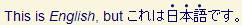

Intended audience: HTML coders (using editors or scripting), script developers (PHP, JSP, etc.), CSS coders, and anyone who wants to use language information to apply CSS styles to markup.
What is the most appropriate way to associate CSS styles with text in a particular language in a multilingual HTML or XML document?
Presentation styles are commonly used to control changes in fonts, font sizes and line heights when language changes occur in the document. This can be particularly useful when dealing with Simplified versus Traditional Chinese, where users tend to prefer different fonts, even though they may be using many of the same characters. It can also be useful to better harmonize the look of mixed, script-specific fonts, such as when mixing Arabic and Latin fonts.
This page looks at available options for doing this most effectively.
The best way to style content by language in HTML is to use the :lang selector in your CSS style sheet. For example:
:lang(ta) {
font-family: Latha, "Tamil MN", serif;
font-size: 120%;
}
The rest of the article adds some detail about :lang, and compares with two other approaches. It also considers implications for documents served as application/xhtml+xml.
There are four ways to apply different styles to different languages in a multilingual document using CSS. They are listed here in order of preference.
For more information about support for these selectors see the test results.
The remainder of this page explains and provides examples of ways in which the use of these selectors differ.
A significant difference between :lang and the other methods is that it recognizes the language of the content of an element even
if the language is declared outside the element in question.
Suppose, for example, that in a future English document containing Japanese text you wanted to style emphasized Japanese text using special Asian CSS3 properties, rather than italicization (which doesn't always work well with the complex characters of Japanese). You might have the following rules in your style sheet:
em { font-style: italic; }
em:lang(ja) { font-style: normal; text‑emphasis: dot; text‑emphasis‑position: over right; }
Now assume that you have the following content, that the user agent supports :lang, and that the html tag
states that this is an English document.
<p>This is <em>English</em>, but <span lang="ja">これは<em>日本語</em>です。</span></p>
You would expect to see the emphasized English word italicized, but the emphasized Japanese word in regular text with small dots above each character, something like this:

The important point to be made in this section is that this would not be possible using the [lang|="..."] or [lang="..."] selectors. For those to work you would have to declare the language explicitly on each Japanese em tag.
This is a significant difference between the usefulness of these different selectors.
The lang attribute is used to identify the language of text served as HTML. Text served as XML should use the xml:lang attribute.
For XHTML that is served as text/html, it is recommended that you use both attributes, since the HTML parser will pick up on the lang attribute, whereas if you parse the content as XML the xml:lang attribute will be used by your XML parser.
The article will first discuss the various options for styling by language in HTML, using the lang attribute. There then follows a section about how to style XML documents based on xml:lang.
:lang(...) pseudo-class selectorThe HTML fragment:
<p>It is polite to welcome people in their own language:</p>
<ul>
<li lang="zh-Hans">欢迎</li>
<li lang="zh-Hant">歡迎</li>
<li lang="el">Καλοσωρίσατε</li>
<li lang="ar">اهلا وسهلا</li>
<li lang="ru">Добро пожаловать</li>
<li lang="din">Kudual</li>
</ul>
could have the following styling:
body {font-family: "Times New Roman",serif;}
:lang(ar) {font-family: "Scheherazade",serif;
font-size: 120%;}
:lang(zh-Hant) {font-family: Kai,KaiTi,serif;}
:lang(zh-Hans) {font-family: DFKai-SB,BiauKai,serif;}
:lang(din) {font-family: "Doulos SIL",serif;}
The Greek and Russian use the styling set for the body element.
This is the ideal way to style language fragments, because it is the only selector that can apply styling to the content of an element when the language of that content is declared earlier in a page.
A rule for :lang(zh) would match elements with a language value of zh. It would also match more specific
language specifications such as zh-Hant, zh-Hans and zh-TW.
The selector :lang(zh-Hant) will only match elements that have a language value of zh-Hant or have inherited
that language value. If the CSS rule specified :lang(zh-TW), the rule would not match our sample paragraph.
[lang|="..."] selector that matches the beginning of a value of an attributeFor markup example we saw in the previous section, the style sheet could be written as:
body {font-family: "Times New Roman",serif;}
*[lang|="ar"] {font-family: "Scheherazade",serif;
font-size: 120%;}
*[lang|="zh-Hant"] {font-family: Kai,KaiTi,serif;}
*[lang|="zh-Hans"] {font-family: DFKai-SB,BiauKai,serif;}
*[lang|="din"] {font-family: "Doulos SIL",serif;}
Unlike :lang, this selector will only work for elements which carry a lang attribute (see Inheritance of language values).
There is a significant difference between this selector and [lang="..."]. Whereas [lang="..."] will
only match elements when the selector value and the attribute value are identical, this selector value will match a language attribute
value that has additional hyphen-separated values. Therefore the selector [lang|="sl"] would match sl-IT, sl-nedis or sl-IT-nedis, and the selector [lang|="zh-Hans"] would also match zh-Hans-CN.
[lang="..."] selector that matches the value of an attributeThe third method of specifying rules is to use an attribute selector that exactly matches the attribute value.
Unlike :lang, this selector will only work for elements which carry a lang attribute (see Inheritance of language values).
For the earlier example of markup, the style sheet could be written as:
body {font-family: "Times New Roman",serif; }
*[lang="ar"] {font-family: "Scheherazade",serif;
font-size: 120%;}
*[lang="zh-Hant"] {font-family: Kai,KaiTi,serif;}
*[lang="zh-Hans"] {font-family: DFKai-SB,BiauKai, serif;}
*[lang="din"] {font-family: "Doulos SIL",serif;}
Note that using this approach en will not match en-AU. The match has to be exact.
This method avoids the need to match the language declarations at all, and relies on class or id attribute markup. Using an ordinary CSS class or id selector works with most browsers that support CSS. The disadvantage is that adding the attributes takes up time and bandwidth.
For the markup example above, this would require us to change the HTML code by adding class attributes as follows:
<p>It is polite to welcome people in their own language:</p>
<ul>
<li class="zhs" lang="zh-Hans">欢迎</li>
<li class="zht" lang="zh-Hant">歡迎</li>
<li class="el" lang="el">Καλοσωρίσατε</li>
<li class="ar" lang="ar">اهلا وسهلا</li>
<li class="ru" lang="ru">Добро пожаловать</li>
<li class="din" lang="din">Kudual</li>
</ul>
We could then have the following styling:
body {font-family: "Times New Roman",serif; }
.ar {font-family: "Scheherazade",serif;
font-size: 120%;}
.zht {font-family: PMingLiU, MingLiU,serif;}
.zhs {font-family: SimSum-18030, SimHei,serif;}
.din {font-family: "Doulos SIL",serif;}
xml:langAs mentioned earlier, in a document that is parsed as XML you need to use the xml:lang attribute (rather than the lang attribute) to express language information.
Using :lang
Use of :lang is straightforward. If the document is parsed as HTML, the :lang selector will match content where the language was defined using a lang attribute value. However, if the document is parsed as XML, the :lang selector will match content labeled with an xml:lang attribute value and ignore any lang attribute value.
Using attr= and attr|=
Use of these selectors involves some additional considerations.
The xml: part of the xml:lang attribute indicates that this is the lang attribute used in the XML namespace. CSS3 Namespaces describes how to handle xml:lang as an attribute in a namespace. Basically you need to declare the namespace and then replace the colon with a vertical bar. For example:
@namespace xml "http://www.w3.org/XML/1998/namespace"
*[xml|lang |= 'ar'] { ... }
or:
@namespace xml "http://www.w3.org/XML/1998/namespace"
*[xml|lang = 'ar'] { ... }
Any @namespace rules must follow all @charset and @import rules and precede all other non-ignored at-rules and rule sets in a style sheet. Note, also, that the URI for the namespace declaration must be exactly correct.
Fallbacks
For browsers that are not namespace aware, you can fall back to escaped characters. For this you need no @namespace declaration, just one of the following:
*[xml\:lang |= '..'] { ... }
or:
*[xml\:lang = '..'] { ... }
Note, however, that if you try to use this approach with a namespace-aware browser (ie. most recent, major browsers), it will not work, so if you feel it is needed, you should use this approach in addition to the namespace-based selectors.
I have used the language codes zh-Hant and zh-Hans. These language codes do not represent specific languages. zh-Hant would
indicate Chinese written in Traditional Chinese script. Similarly zh-Hans represents Chinese written in Simplified Chinese script. This
could refer to Mandarin or many other Chinese languages.
Until recently the codes zh-TW and zh-CN were used to indicate Traditional and Simplified versions of Chinese writing, respectively.
In reality, zh-TW should indicate Chinese spoken in Taiwan, although there is more than one Chinese language spoken in Taiwan. Similarly zh-CN represents Chinese spoken in China (PRC). This could refer to Mandarin or any other Chinese language.
If you need to use language tags to differentiate between Chinese languages, the IANA language subtag registry has more precise language codes for a range of Chinese languages. For more information see Language tags in HTML and XML.
Getting started? Language on the Web http://www.w3.org/International/getting-started/language
Related links, Authoring HTML & CSS